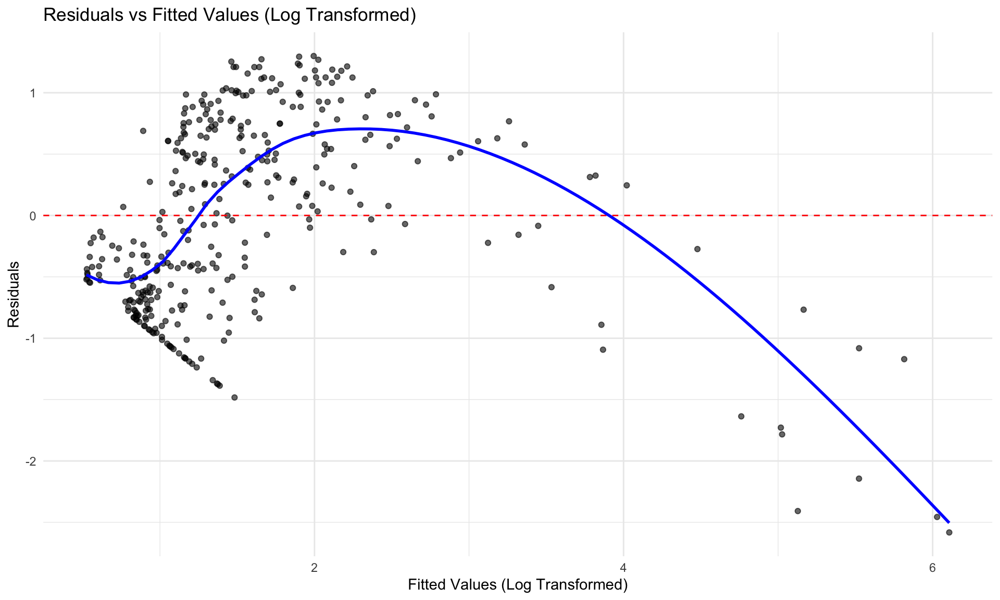
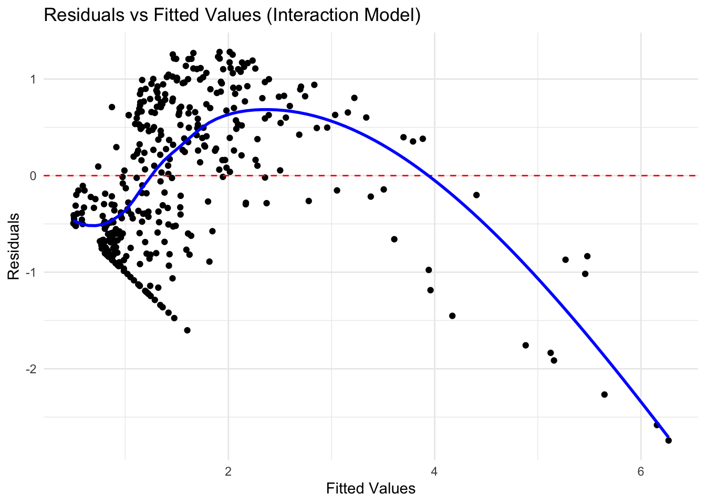

Regression Analysis: Technical Report
STA312: Topics in Statistics
1 Introduction
Understanding customer satisfaction and revenue generation in industries like airlines and online platforms such as youtube has become essential for data-driven decision-making. In this report, we explore two distinct datasets—Invistico Airline Customer Satisfaction and YouTube Channel Real Performance Analytics—to evaluate factors influencing customer satisfaction and video revenue generation, respectively.The paper aims to use statistical modeling and diagnostic evaluation, to derive meaningful insights from the datasets, address model assumptions, and provide practical application. Advanced techniques such as log transformation and model comparisons are incorporated to ensure the reliability and validity of results. The first step focuses on predicting customer’s satisfaction for Invistico Airline, an alias name for airline is used for privacy concerns, using Binomial Logistic Regression. Airlines operate in a highly competitive environment where customer experience are key determinant to determine brand loyalty and business growth. By analyzing service quality metrics, travel characteristics, and demographics help in improving satisfaction. The other analysis employs Multiple Linear Regression as a tool to determine the digital content, to understand how performance metrics such as video duration, views, and ad impressions impact revenue can help content creators and marketers optimize strategies for monetization and audience engagement.
2 Data
2.1 Airline Dataset
2.1.1 Dataset Source
The data used in this paper were collected from Kaggle website Library. The specific dataset used in this paper is the ‘Airline Customer satisfaction’ (Osuyah 2023). The dataset is categorized by collecting feedback from customer after they have traveled with the airline and determining if customer was satisfied or dissatisfied by the services. The actual name of the airline is not provided in the data due privacy concerns so the alias name used is Invistico Airlines.
Key variables
The dataset provides a comprehensive overview of various factors influencing customer satisfaction in airline services. It includes a variety of metrics categorized into key domains, such as demographic details, travel characteristics, service quality ratings, and performance metrics. We used many variables such as Demographic Information: gender, passenger age, Travel Characteristics: class: (Economy, Business, or Economy Plus), flight distance, Service Quality Metrics (Rated on a scale of 0–5): seat_comfort, food and drink, gate location, inflight entertainment, ease of online booking, cleanliness and other services like leg room, check-in service. One other parameter was departure delay in minutes that is delay in flight departure time
2.2 Youtube Dataset
2.2.1 Dataset Source
The data used in this paper were collected from Kaggle website Library. The dataset used in this paper is the ‘Youtube Channel Real Performance Analytics’ (Alexey 2023). The YouTube video analytics, focuses on key performance, engagement, revenue, and audience metrics. It enables insights into video duration, upload timing, and ad impressions’ impact on monetization and audience retention.
Key variables
This dataset provides comprehensive information about video performance, revenue generation, and audience engagement, which can be used for detailed analytics and insights and paper focuses on predicting the estimated revenue (USD) as the dependent variable and three independent variables, the number of views on the playlist associated with the videos (playlist_views), the number of ad impressions generated by the videos (ad_impressions), and the duration of the video content (video_duration).
Data used in this paper was downloaded, cleaned and analyzed with the programming language R (R Core Team 2022). Also the paper used with support of additional packages in R: ‘tidyverse’ (Wickham et al. 2019), ‘janitor’ (Firke 2021), ‘dplyr’ (Wickham et al. 2022), ‘readr’ (Wickham, Hester, and Bryan 2024), ‘ggplot’ (Wickham 2016), ‘AER’(Kleiber and Zeileis 2008), ‘gtsummary’ (Sjoberg et al. 2021), ‘reshape2’ (Wickham 2007), ‘broom’ (Robinson, Hayes, and Couch 2024), ‘MASS’ (Venables and Ripley 2002).
3 Methodology
3.1 Binomial Logisitic Regression
The Invisco airline collected the feedback from customers. The model aims to find the probability of the binary outcome i.e. passenger satisfaction:
- ( y = 0 ): Customer is dissatisfied.
- ( y = 1 ): Customer is satisfied.
The binomial logistic regression model predicts the likelihood of being satisfied (P(Y = 1)) based on independent variables. The probability of a binary outcome Y being 1 is modeled as:
\[ P(Y = 1) = \frac{e^{\beta_0 + \beta_1 X_1 + \beta_2 X_2 + \dots + \beta_p X_p}}{1 + e^{\beta_0 + \beta_1 X_1 + \beta_2 X_2 + \dots + \beta_p X_p}} \]
Or equivalently, the log-odds form is given by:
\[ \log\left(\frac{P(Y=1)}{1 - P(Y=1)}\right) = \beta_0 + \beta_1 X_1 + \beta_2 X_2 + \dots + \beta_p X_p \]
Where:
\(P(Y = 1)\): Probability that the customer is satisfied.
\(\frac{P(Y=1)}{1 - P(Y=1)}\): Odds of satisfaction.
\(\beta_0\): Intercept of the model.
\(\beta_1, \beta_2, \dots, \beta_p\): Coefficients representing the effect of each predictor
3.2 Multiple Linear Regression
Using a Multiple Linear Regression (MLR) model to predict the dependent variable Estimated Revenue (USD) based on a set of independent variables from the YouTube dataset. The goal is to understand how key performance metrics influence revenue generation and provide actionable insights for optimization.
The general equation for Multiple Linear Regression is: \[ Y = \beta_0 + \beta_1 X_1 + \beta_2 X_2 + \dots + \beta_p X_p + \epsilon \]
For this analysis, the log-transformed equation used:
\[ \log(\text{Estimated Revenue (USD)}) = \beta_0 + \beta_1 (\text{Playlist Views}) + \beta_2 (\text{Ad Impressions}) + \beta_3 (\text{Video Duration}) + \epsilon \]
4 Analysis
4.1 Binomial Logisitic Regression
The correlation matrix from Figure 1 highlights strong positive correlation between arrival delays and departure delays of 0.97, indicating that delays at departure often propagate to arrival times. Additionally, service metrics such as ease of online booking and online boarding are moderately correlated (0.68), reflecting their positive relationship with customer experience. Service-related variables like inflight entertainment and food and drink also show moderate positive associations (~0.43), suggesting that satisfaction in one area influences the other. This analysis underscores the need to address extreme delays while enhancing clustered service areas for better customer satisfaction.
The Table 1 shows the result of binomial logistic regression analysis. The models uses multiple predictors. The predictors include numerical predictors and categorical predictors, so we use Gender and female as the reference level and for Business class as the reference level. In the Table 1 we observe, male passenger report higher satisfaction than females, indicating they are more than twice (2.43) likely to be satisfied. Similarly, customers in Eco and Eco Plus classes have a higher relative satisfaction likelihood after adjusting for expectations and service quality using business class as the reference level. However, services offered by the airline such as inflight entertainment, seat comfort, cleanliness, food & drink and ease of online booking negatively correlated by customer satisfaction. The Inflight entertainment is one of the strongest negative predictors of customer satisfaction as Inflight Entertainment (-0.8165) the largest negative log-odds, indicating that poor ratings in entertainment strongly reduces satisfaction.
| term | estimate | std.error | statistic | p.value | odds_ratio |
|---|---|---|---|---|---|
| (Intercept) | 5.3191244 | 0.0559170 | 95.125310 | 0 | 204.2050029 |
| flight_distance | 0.0000719 | 0.0000081 | 8.855758 | 0 | 1.0000719 |
| departure_delay_in_minutes | 0.0046094 | 0.0002130 | 21.643370 | 0 | 1.0046200 |
| cleanliness | -0.1034490 | 0.0075648 | -13.675118 | 0 | 0.9017220 |
| inflight_entertainment | -0.8164875 | 0.0074769 | -109.202016 | 0 | 0.4419814 |
| seat_comfort | -0.2606842 | 0.0087304 | -29.859229 | 0 | 0.7705242 |
| age | -0.0043520 | 0.0005263 | -8.268296 | 0 | 0.9956575 |
| genderMale | 0.8899748 | 0.0155075 | 57.389899 | 0 | 2.4350682 |
| classEco | 1.1505727 | 0.0166927 | 68.926771 | 0 | 3.1600022 |
| classEco Plus | 0.9922172 | 0.0302824 | 32.765479 | 0 | 2.6972081 |
| food_and_drink | 0.3244823 | 0.0087978 | 36.882340 | 0 | 1.3833143 |
| leg_room_service | -0.2757300 | 0.0065272 | -42.243466 | 0 | 0.7590178 |
| gate_location | -0.0576163 | 0.0069299 | -8.314168 | 0 | 0.9440121 |
| ease_of_online_booking | -0.4804120 | 0.0068167 | -70.475289 | 0 | 0.6185285 |
| checkin_service | -0.2724898 | 0.0062839 | -43.363294 | 0 | 0.7614812 |
Moving from logistic regression we perform model comparison to ensure both model are accurate. A full model includes chosen predictors whereas the reduced model includes a subset of predictor use in full model as seen in Table 1. The reduced logistic regression model in Table 2 shows the relationship between customer satisfaction and a selected set of predictors. The compare the models we use AIC as statistical measure used to evaluate and compare the quality of models.
| Term | Estimate | Std. Error | z-value | p-value | Conf. Low | Conf. High |
|---|---|---|---|---|---|---|
| (Intercept) | 3.7406 | 0.0417 | 89.6859 | 0 | 3.6590 | 3.8225 |
| departure_delay_in_minutes | 0.0041 | 0.0002 | 20.3415 | 0 | 0.0037 | 0.0045 |
| cleanliness | -0.4586 | 0.0064 | -71.8510 | 0 | -0.4711 | -0.4461 |
| inflight_entertainment | -0.9084 | 0.0069 | -132.5327 | 0 | -0.9219 | -0.8950 |
| seat_comfort | -0.3667 | 0.0081 | -45.3466 | 0 | -0.3826 | -0.3509 |
| age | -0.0088 | 0.0005 | -18.3363 | 0 | -0.0097 | -0.0078 |
| genderMale | 0.9216 | 0.0146 | 63.1258 | 0 | 0.8930 | 0.9502 |
| classEco | 1.1685 | 0.0155 | 75.1639 | 0 | 1.1381 | 1.1990 |
| classEco Plus | 1.0175 | 0.0286 | 35.5922 | 0 | 0.9615 | 1.0736 |
| food_and_drink | 0.3745 | 0.0076 | 49.2733 | 0 | 0.3597 | 0.3895 |
It helps to identify the model that best balances goodness-of-fit and simplicity. From Table 3 we obverse AIC for 2 models. The lower the AIC better the model, therefore, Table 1 AIC equivalent to 108635.4 results are better compared to reduced model AIC. Table 3 shows the full model explains customer satisfaction substantially better than the reduced model, as evidenced by the large reduction in deviance that indicates additional predictors in the full model provide a significantly better fit to the data. We observe p-value is extremely small so we reject the null hypothesis.
| Model | Residual Df | Residual Deviance | Df | Deviance | Pr(>Chi) |
|---|---|---|---|---|---|
| Reduced Model | 129477 | 118909.3 | NA | NA | NA |
| Full Model | 129472 | 108605.4 | 5 | 10303.97 | 0 |
4.2 Multiple Linear Regression
For the youtube datatset which analysis evaluates the performance of a regression model. We compare multiple linear regression with a log transformed regression model. From Table 4 the model evaluates estimated revenue generated in USD by YouTube videos. The intercept (0.514) is statistically significant, indicating when all predictors are zero log-transformed revenue is approximately 0.5134 units. All predictors are statistically significant and they have all have positive relationship with the dependent variables. The p-value is less than 0.05, indicating strong evidence. Ad impressions are the most impact predictor, as 1-unit increase in ad impressions leads to a 0.003% increase in revenue.
| Term | Estimate | Std. Error | t-value | p-value |
|---|---|---|---|---|
| (Intercept) | 0.51378 | 0.09705 | 5.29412 | 0.00000 |
| playlist_views | 0.00026 | 0.00008 | 3.42790 | 0.00068 |
| ad_impressions | 0.00003 | 0.00000 | 20.09616 | 0.00000 |
| video_duration | 0.00070 | 0.00012 | 5.61654 | 0.00000 |
Figure 2 shows QQ-Plot follows a theoretical distribution indicating the residuals are normally distributed which help to check the linearity assumptions. As the residuals re distributed around red line with some curvature suggesting slight deviation. We can concludethe residuals are near normal.

In Figure 3 we plot the relationship between residuals and predicted values for a log transformed regression. The The residuals are centered around the red horizontal line at y=0, indicating that the model does not exhibit systematic bias in predictions (e.g., overestimating or underestimating consistently). Ideally, the residuals should have a constant spread (homoscedasticity). There appears to be heteroscedasticity, as the spread of residuals increases with larger fitted values. This suggests that the variance of residuals is not constant and increases as fitted values grow. A non-linear relationship between the predictors and the response variable that is not captured by the model.

We considered many models including by introducing the polynomial or interaction terms in the model to capture non-linear relationships ,however, we did not see an improvement. We added complexity but it did not translate into better predictive power, and the model’s assumptions were still not fully satisfied. Adding more complexity to the model may lead to over fitting, especially if the added terms are not improving the model’s predictive accuracy.
5 Results
The analysis of the Invistico Airline dataset using binomial logistic regression revealed significant factors influencing customer satisfaction. Gender play’s a crucial role, with male passengers being 2.43 times more likely to report satisfaction compared to females. The Class of travelling passengers in Economy and Economy Plus classes significantly likely to report satisfaction compared to those in Business Class, with odds ratios of 3.16 and 2.70, respectively. Service quality metrics such as inflight entertainment and cleanliness were negatively associated with satisfaction, indicating that poor ratings in these areas significantly reduce the likelihood of satisfaction. Additionally, delays, particularly departure delays, had a small but significant negative effect on satisfaction, emphasizing the importance of operational efficiency. The full model had a lower AIC of 108,635.4 than the reduced model had with the AIC of 118,929.3 in support of the hypothesis that incorporating additional predictors indicated that there was room for improvement in service quality such as inflight entertainment and cleanliness and reduction in flight delays could lead to customer satisfaction.
For the youtube dataset, multiple linear regression technique was employed with the number of estimated revenue in usd being the dependent variable. Ad impressions takes the first place, and its one unit increase causes a 0.003% increase in revenue calculated. Similarly, there is significant correlation between the Playlist Views and the Revenues, which makes it apparent that the targeted playlists drive the monetization process. Length of the video had a much lesser and significant positive correlation with the revenue which suggests that perhaps longer videos may generate more repute. After applying a log-transformation for the regression model, the issues of skewness and heteroscedasticity of the residuals were resolved with reasonable statistical significance of the intercept which showed that the model accounted for a greater proportion of variance in the estimated revenue.Subsequent residual analysis supported the validity of the model by close approximation of the normal distribution, achieved by QQ-Plots with slight variations arising in the residual distributions. Perhaps, the current study reinforces importance of ad impressions, playlist strategies, and video length in the determination of the revenue for the YouTube content creators.
6 Conclusion
To conclude with, customer satisfaction and revenue generation across different industries.The statistical methods were derived from two distinct dataset; So, Binomial logistic regression identified critical factors affecting passenger satisfaction. Male passengers and those in higher-class services reported higher satisfaction levels, while poor ratings in inflight entertainment, cleanliness, and departure delays negatively impacted satisfaction. Therefore, addressing operational inefficiencies and enhancing service quality in these areas can significantly improve customer experiences and loyalty. Multiple linear regression highlighted the importance of performance metrics, such as ad impressions, playlist views, and video duration, in predicting estimated revenue. Log-transformed models improved fit and revealed that ad impressions were the most influential factor in driving revenue. Content creators can optimize these metrics to maximize audience engagement and monetization opportunities.
7 Appendix
#| warning: false
#| message: false
#| echo: false
#| include: false
# Install necessary packages
# install.packages(c("tidyverse", "AER", "dplyr", "readr", "janitor",
# "ggplot2", "knitr", "reshape2", "gtsummary", "broom", "MASS"))
#### Preamble ####
# Purpose: Writing a paper: Data Analysis
# Author: "Mohammed Yusuf Shikh"
# Date: December 3rd, 2024
# Contact: mohammedyusuf.shaikh@mail.utoronto.ca
library(tidyverse)
library(AER)
library(dplyr)
library(readr)
library(janitor)
library(ggplot2)
library(knitr)
library(reshape2)
library(gtsummary)
library(broom)
library(MASS)
# load datset
invistico_airline <- read_csv("~/Library/CloudStorage/OneDrive-UniversityofToronto/UTM Courses/STA312 Topic in Statistics/invistico_airline_dataset.csv")Rows: 129487 Columns: 24
── Column specification ────────────────────────────────────────────────────────
Delimiter: ","
chr (5): satisfaction, gender, customer_type, type_of_travel, class
dbl (19): age, flight_distance, seat_comfort, departure_arrival_time_conveni...
ℹ Use `spec()` to retrieve the full column specification for this data.
ℹ Specify the column types or set `show_col_types = FALSE` to quiet this message.# Data Cleaning
# Drop Missing Values
invistico_airline <- invistico_airline %>%
drop_na()
# cleaned names
invistico_airline <- clean_names(invistico_airline)
# Add column of 1 & 0
invistico_airline <- invistico_airline %>%
mutate(satisfaction_code = factor(satisfaction,
levels = c("satisfied", "dissatisfied"),
labels = c("1", "0"))
)
# Reshape format data
invistico_airline_long <- reshape2::melt(invistico_airline)Using satisfaction, gender, customer_type, type_of_travel, class, satisfaction_code as id variables# Calculate the correlation matrix
cor_matrix <- invistico_airline %>%
dplyr::select(where(is.numeric)) %>% # Explicitly use dplyr::select to avoid masking
cor(use = "complete.obs") # Compute correlations for numeric columns only
# Reshape the corr matrix
cor_matrix_long <- melt(cor_matrix)
# Plot the heatmap
ggplot(cor_matrix_long, aes(x = Var1, y = Var2, fill = value)) +
geom_tile(color = "white") +
scale_fill_gradient2(low = "red", high = "blue", mid = "white", midpoint = 0,
limit = c(-1, 1), space = "Lab", name = "Correlation") +
theme_minimal() +
theme(axis.text.x = element_text(angle = 45, vjust = 1, hjust = 1)) +
labs(
title = "Heatmap of Correlation Matrix for Invistico Airline Dataset",
x = "",
y = ""
)
# Fit the binomial logistic regression model
logistic_model <- glm(
satisfaction_code ~ flight_distance + departure_delay_in_minutes + cleanliness
+ inflight_entertainment + seat_comfort + age
+ gender + class + food_and_drink + leg_room_service + gate_location + ease_of_online_booking
+ checkin_service,
data = invistico_airline,
family = binomial
)
# Extract the model summary
model_summary <- tidy(logistic_model) %>%
mutate(
significance = case_when(
p.value < 0.001 ~ "***",
p.value < 0.01 ~ "**",
p.value < 0.05 ~ "*",
TRUE ~ ""
)
) %>%
mutate(across(where(is.numeric), ~ round(., 4))) # Round numeric values
# Tidy the model for output
logistic_model_summary <- tidy(logistic_model, conf.int = FALSE) %>%
mutate(
odds_ratio = exp(estimate),
)
# Making Table
kable(logistic_model_summary, caption = "Binomial Logistic Regression Results")| term | estimate | std.error | statistic | p.value | odds_ratio |
|---|---|---|---|---|---|
| (Intercept) | 5.3191244 | 0.0559170 | 95.125310 | 0 | 204.2050029 |
| flight_distance | 0.0000719 | 0.0000081 | 8.855758 | 0 | 1.0000719 |
| departure_delay_in_minutes | 0.0046094 | 0.0002130 | 21.643370 | 0 | 1.0046200 |
| cleanliness | -0.1034490 | 0.0075648 | -13.675118 | 0 | 0.9017220 |
| inflight_entertainment | -0.8164875 | 0.0074769 | -109.202016 | 0 | 0.4419814 |
| seat_comfort | -0.2606842 | 0.0087304 | -29.859229 | 0 | 0.7705242 |
| age | -0.0043520 | 0.0005263 | -8.268296 | 0 | 0.9956575 |
| genderMale | 0.8899748 | 0.0155075 | 57.389899 | 0 | 2.4350682 |
| classEco | 1.1505727 | 0.0166927 | 68.926771 | 0 | 3.1600022 |
| classEco Plus | 0.9922172 | 0.0302824 | 32.765479 | 0 | 2.6972081 |
| food_and_drink | 0.3244823 | 0.0087978 | 36.882340 | 0 | 1.3833143 |
| leg_room_service | -0.2757300 | 0.0065272 | -42.243466 | 0 | 0.7590178 |
| gate_location | -0.0576163 | 0.0069299 | -8.314168 | 0 | 0.9440121 |
| ease_of_online_booking | -0.4804120 | 0.0068167 | -70.475289 | 0 | 0.6185285 |
| checkin_service | -0.2724898 | 0.0062839 | -43.363294 | 0 | 0.7614812 |
reduced_model <- glm(
satisfaction_code ~ departure_delay_in_minutes + cleanliness + inflight_entertainment + inflight_entertainment + seat_comfort + seat_comfort + age
+ gender + class + food_and_drink ,
data = invistico_airline,
family = binomial
)
# Clean Table
reduced_model_summary <- tidy(reduced_model, conf.int = TRUE)
# Table using Kable
kable(
reduced_model_summary,
caption = "Reduced Binomial Logistic Regression Model Results",
digits = 4,
col.names = c("Term", "Estimate", "Std. Error", "z-value", "p-value", "Conf. Low", "Conf. High")
)| Term | Estimate | Std. Error | z-value | p-value | Conf. Low | Conf. High |
|---|---|---|---|---|---|---|
| (Intercept) | 3.7406 | 0.0417 | 89.6859 | 0 | 3.6590 | 3.8225 |
| departure_delay_in_minutes | 0.0041 | 0.0002 | 20.3415 | 0 | 0.0037 | 0.0045 |
| cleanliness | -0.4586 | 0.0064 | -71.8510 | 0 | -0.4711 | -0.4461 |
| inflight_entertainment | -0.9084 | 0.0069 | -132.5327 | 0 | -0.9219 | -0.8950 |
| seat_comfort | -0.3667 | 0.0081 | -45.3466 | 0 | -0.3826 | -0.3509 |
| age | -0.0088 | 0.0005 | -18.3363 | 0 | -0.0097 | -0.0078 |
| genderMale | 0.9216 | 0.0146 | 63.1258 | 0 | 0.8930 | 0.9502 |
| classEco | 1.1685 | 0.0155 | 75.1639 | 0 | 1.1381 | 1.1990 |
| classEco Plus | 1.0175 | 0.0286 | 35.5922 | 0 | 0.9615 | 1.0736 |
| food_and_drink | 0.3745 | 0.0076 | 49.2733 | 0 | 0.3597 | 0.3895 |
# AIC Test
aic_comparison <- data.frame(
Model = c("Full Model", "Reduced Model"),
AIC = c(AIC(logistic_model), AIC(reduced_model))
)
# Creating Table
knitr::kable(
aic_comparison,
col.names = c("Model", "AIC"),
digits = 3,
align = c("l", "c")
)| Model | AIC |
|---|---|
| Full Model | 108635.4 |
| Reduced Model | 118929.3 |
# Analysis of Deviance Test
anova_results <- anova(reduced_model, logistic_model, test = "Chisq")
# Convert the results into a data frame
anova_table <- as.data.frame(anova_results)
# Rename columns
colnames(anova_table) <- c("Residual Df", "Residual Deviance", "Df", "Deviance", "Pr(>Chi)")
# Add a row for model names
anova_table <- cbind(
Model = c("Reduced Model", "Full Model"),
anova_table
)
# Make Table using kable
knitr::kable(
anova_table,
caption = "Analysis of Deviance Table: Comparison of Reduced and Full Models",
digits = 4,
align = c("l", "c", "c", "c", "c", "c")
)| Model | Residual Df | Residual Deviance | Df | Deviance | Pr(>Chi) |
|---|---|---|---|---|---|
| Reduced Model | 129477 | 118909.3 | NA | NA | NA |
| Full Model | 129472 | 108605.4 | 5 | 10303.97 | 0 |
#########################
# Import Dataset
youtube_dataset <- read_csv("youtube_channel_real_performance_analytics.csv")Rows: 364 Columns: 70
── Column specification ────────────────────────────────────────────────────────
Delimiter: ","
chr (1): Day of Week
dbl (68): ID, Video Duration, Days Since Publish, Day, Month, Year, Revenue...
dttm (1): Video Publish Time
ℹ Use `spec()` to retrieve the full column specification for this data.
ℹ Specify the column types or set `show_col_types = FALSE` to quiet this message.# Drop rows with NA values from entire dataset
youtube_dataset <- youtube_dataset %>%
drop_na()
# cleaned names standardized
youtube_dataset <- clean_names(youtube_dataset)
# Remove specific columns
# Remove specific columns
columns_to_remove <- c(
"id", "returning_viewers", "new_viewers", "average_views_per_user",
"unique_viewers", "watched_not_skipped_percent", "feed_impressions",
"transaction_revenue_usd", "transactions", "revenue_from_transactions_usd",
"reactions", "chat_messages_count", "reminders_set", "stream_hours",
"remix_views", "remix_count", "subscribers_from_posts",
"returned_items_usd", "unconfirmed_commissions_usd",
"approved_commissions_usd", "orders", "total_sales_volume_usd"
)
# Select all columns except the ones to be removed
youtube_dataset <- youtube_dataset %>%
dplyr::select(-dplyr::all_of(columns_to_remove))
# Plot histograms for variables variables
ggplot(invistico_airline_long, aes(x = value)) +
geom_histogram(bins = 15, fill = "steelblue", color = "black") +
facet_wrap(~variable, scales = "free") +
theme_minimal()
# Youtube dataset
# Log-transformation
youtube_dataset$log_estimated_revenue_usd <- log(youtube_dataset$estimated_revenue_usd+1)
# Fit the model
fit_log <- lm(log_estimated_revenue_usd ~ playlist_views + ad_impressions + video_duration, data = youtube_dataset)
# Tidy/ Clean
fit_table <- tidy(fit_log)
# Make Table
kable(
fit_table,
caption = "Regression Analysis of Log-Transformed Estimated Revenue",
col.names = c("Term", "Estimate", "Std. Error", "t-value", "p-value"),
digits = 5
)| Term | Estimate | Std. Error | t-value | p-value |
|---|---|---|---|---|
| (Intercept) | 0.51378 | 0.09705 | 5.29412 | 0.00000 |
| playlist_views | 0.00026 | 0.00008 | 3.42790 | 0.00068 |
| ad_impressions | 0.00003 | 0.00000 | 20.09616 | 0.00000 |
| video_duration | 0.00070 | 0.00012 | 5.61654 | 0.00000 |
# QQ Plot
qqnorm(fit_log$residuals)
qqline(fit_log$residuals, col = "red")
# Residuals vs Fitted Values Plot
ggplot(data = as.data.frame(cbind(Fitted = fit_log$fitted.values, Residuals = fit_log$residuals))) +
aes(x = Fitted, y = Residuals) +
geom_point(alpha = 0.6) + # Scatter points
geom_hline(yintercept = 0, color = "red", linetype = "dashed") +
geom_smooth(method = "loess", color = "blue", linetype = "solid", se = FALSE) +
labs(
x = "Fitted Values (Log Transformed)",
y = "Residuals",
title = "Residuals vs Fitted Values (Log Transformed)"
) +
theme_minimal()`geom_smooth()` using formula = 'y ~ x'
# Add interaction terms to the model
fit_interaction <- lm(log_estimated_revenue_usd ~
playlist_views * ad_impressions + video_duration,
data = youtube_dataset)
# Summary of the model
summary(fit_interaction)
Call:
lm(formula = log_estimated_revenue_usd ~ playlist_views * ad_impressions +
video_duration, data = youtube_dataset)
Residuals:
Min 1Q Median 3Q Max
-2.74236 -0.60276 0.02494 0.67828 1.28108
Coefficients:
Estimate Std. Error t value Pr(>|t|)
(Intercept) 4.860e-01 9.828e-02 4.944 1.17e-06 ***
playlist_views 3.626e-04 9.842e-05 3.684 0.000265 ***
ad_impressions 3.599e-05 1.924e-06 18.707 < 2e-16 ***
video_duration 7.035e-04 1.247e-04 5.644 3.38e-08 ***
playlist_views:ad_impressions -3.901e-09 2.370e-09 -1.646 0.100618
---
Signif. codes: 0 '***' 0.001 '**' 0.01 '*' 0.05 '.' 0.1 ' ' 1
Residual standard error: 0.7812 on 359 degrees of freedom
Multiple R-squared: 0.586, Adjusted R-squared: 0.5814
F-statistic: 127 on 4 and 359 DF, p-value: < 2.2e-16# Residuals vs Fitted Plot for Interaction Model
residuals_data_interaction <- data.frame(
Fitted = fit_interaction$fitted.values,
Residuals = fit_interaction$residuals
)
ggplot(residuals_data_interaction, aes(x = Fitted, y = Residuals)) +
geom_point(color = "black") +
geom_hline(yintercept = 0, color = "red", linetype = "dashed") +
geom_smooth(method = "loess", color = "blue", se = FALSE) +
labs(
title = "Residuals vs Fitted Values (Interaction Model)",
x = "Fitted Values",
y = "Residuals"
) +
theme_minimal()`geom_smooth()` using formula = 'y ~ x'
8 References
Alexey, Positive. 2023. “YouTube Channel Performance Analytics.” https://www.kaggle.com/datasets/positivealexey/youtube-channel-performance-analytics/data.
Firke, Sam. 2021. Janitor: Simple Tools for Examining and Cleaning Dirty Data. https://CRAN.R-project.org/package=janitor.
Kleiber, Christian, and Achim Zeileis. 2008. Applied Econometrics with R. New York: Springer-Verlag. https://CRAN.R-project.org/package=AER.
Osuyah. 2023. “Invistico Airline Dataset.” https://www.kaggle.com/datasets/osuyah/invistico-airline/data.
R Core Team. 2022. R: A Language and Environment for Statistical Computing. Vienna, Austria: R Foundation for Statistical Computing. https://www.R-project.org/.
Robinson, David, Alex Hayes, and Simon Couch. 2024. Broom: Convert Statistical Objects into Tidy Tibbles. https://CRAN.R-project.org/package=broom.
Sjoberg, Daniel D., Karissa Whiting, Michael Curry, Jessica A. Lavery, and Joseph Larmarange. 2021. “Reproducible Summary Tables with the Gtsummary Package.” The R Journal 13: 570–80. https://doi.org/10.32614/RJ-2021-053.
Venables, W. N., and B. D. Ripley. 2002. Modern Applied Statistics with s. Fourth. New York: Springer. https://www.stats.ox.ac.uk/pub/MASS4/.
Wickham, Hadley. 2007. “Reshaping Data with the reshape Package.” Journal of Statistical Software 21 (12): 1–20. http://www.jstatsoft.org/v21/i12/.
———. 2016. Ggplot2: Elegant Graphics for Data Analysis. Springer-Verlag New York. https://ggplot2.tidyverse.org.
Wickham, Hadley, Mara Averick, Jennifer Bryan, Winston Chang, Lucy D’Agostino McGowan, Romain François, Garrett Grolemund, et al. 2019. “Welcome to the tidyverse.” Journal of Open Source Software 4 (43): 1686. https://doi.org/10.21105/joss.01686.
Wickham, Hadley, Romain François, Lionel Henry, and Kirill Müller. 2022. Dplyr: A Grammar of Data Manipulation. https://CRAN.R-project.org/package=dplyr.
Wickham, Hadley, Jim Hester, and Jennifer Bryan. 2024. Readr: Read Rectangular Text Data. https://readr.tidyverse.org.